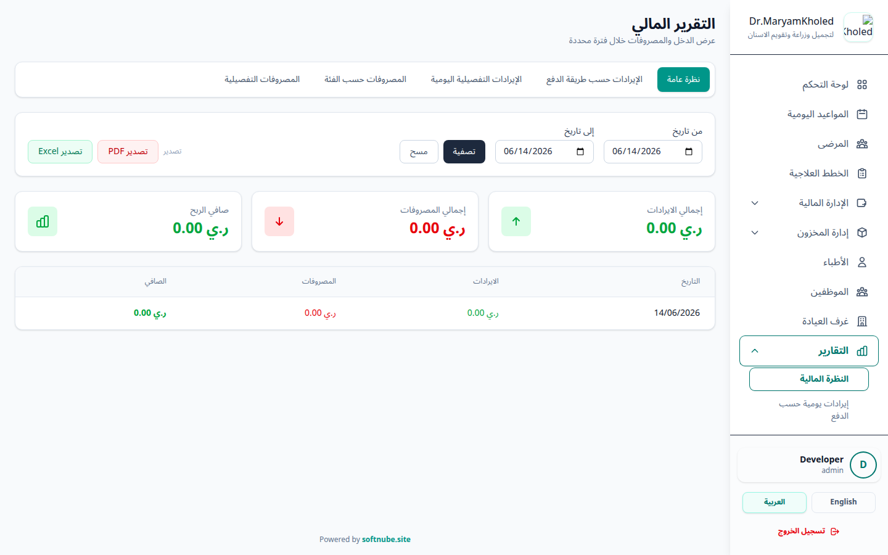

يقدم تبويب "التقارير" ملخصات وإحصائيات شاملة لأداء العيادة على المستوى المالي والإداري. يمكنك من خلاله
متابعة الإيرادات والمصروفات خلال فترات زمنية معينة.

شكل 1: الواجهة الرئيسية للتقارير المالية والإدارية
تساعدك التقارير المالية على تحليل الأداء المالي للمركز بكل دقة. يوفّر النظام خمسة أنواع من التقارير يمكنك
التنقل بينها:
- نظرة عامة مالية: ملخص لإجمالي الإيرادات والمصروفات وصافي الدخل خلال الفترة المحددة.
- الإيراد اليومي حسب طريقة الدفع: توزيع إيرادات اليوم على طرق الدفع المختلفة (نقدي،
تحويل، ...) مع نسبة كل طريقة.
- تفاصيل الإيراد اليومي: قائمة بكل الدفعات المستلمة مع المريض والمبلغ وطريقة الدفع.
- المصروفات حسب الفئة: توزيع المصروفات على فئاتها مع إجمالي وعدد كل فئة.
- تفاصيل المصروفات: قائمة تفصيلية بكل مصروف خلال الفترة المحددة.
ℹ️
ملاحظة: لا يوجد تقرير لتصنيف الإيرادات حسب الطبيب أو العيادة أو نوع الخدمة، ولا
يوجد تقرير للمستحقات غير المحصلة.
قبل استعراض أي تقرير أو تصديره يمكنك ضبط الفلاتر التالية:
- تاريخ البداية والنهاية: حدّد نطاق الفترة الزمنية (date_from و date_to) المراد
الاستعلام عنها، على أن يكون تاريخ النهاية مساوياً أو لاحقاً لتاريخ البداية.
- فئة المصروف: في تقارير المصروفات يمكنك تحديد فئة مصروف معيّنة لقصر النتائج عليها.
بعد ضبط الفلاتر يتحدّث محتوى التقرير المعروض وفقاً للنطاق والفئة المختارين.
يوفر النظام خاصية تصدير البيانات لتسهيل عملية المراجعة ومشاركتها مع الإدارة أو المحاسبين.
💡
خيارات التصدير: يمكنك تصدير التقارير بصيغة PDF جاهزة للطباعة، أو
بصيغة Excel (xlsx) في حال رغبت بإجراء المزيد من التحليلات والعمليات الحسابية
المتقدمة.
لاستخراج التقرير، اختر نوع التقرير وحدّد تاريخ البداية والنهاية (وفئة المصروف عند
الحاجة)، ثم اضغط على زر التصدير بالصيغة المطلوبة للتحميل المباشر.